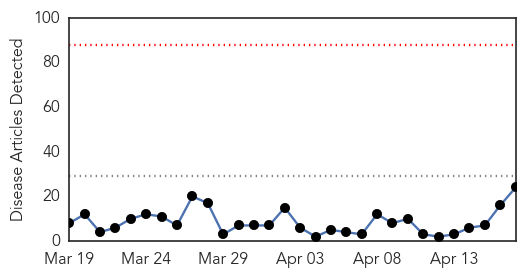
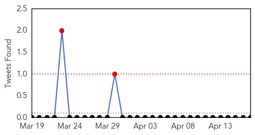
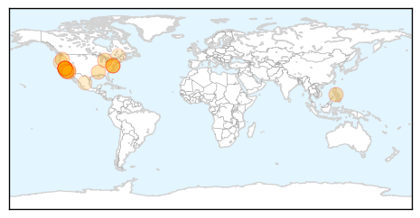
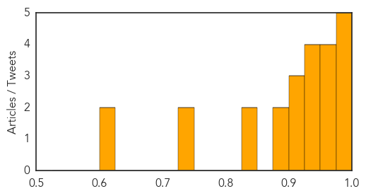
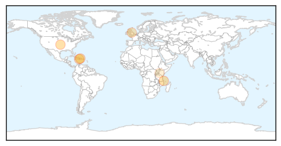

Measles
30-Day Web Trend
0 alerts, 0 warnings

30-Day Twitter Trend
1 alerts, 0 warnings

Article Locations
Article Confidences
Top Articles:
- 0.996
- Disney measles outbreak that sparked vaccination debate ends
- 0.994
- News Scan for Apr 17, 2015
- 0.993
- MEASLES: Disneyland outbreak declared over
- 0.991
- Disneyland measles outbreak over, health officials say — RT USA
- 0.983
- Disneyland-linked measles outbreak declared over in California
- 0.972
- Large measles outbreak traced to Disneyland is declared over
- 0.972
- Doctors voice strong support for vaccinations at Midland seminar
- 0.966
- Measles outbreak that started at Disneyland is over, health officials rule
- 0.962
- Calif. Measles Outbreak is Over, State Says
- 0.938
- Officials: Measles outbreak traced to Disneyland officially over
- 0.937
- State Health Officials Declare Measles Outbreak Traced to Disneyland Over
- 0.935
- San Diego 6 News, The CW (XETV) – News, Weather, Traffic, Sports
- 0.932
- California health officials declare measles outbreak over
- 0.914
- California declares Disneyland measles outbreak over as vaccine fight rages on
- 0.912
- Disneyland Originated Measles Outbreak is Over!
- 0.902
- California measles outbreak declared over
- 0.895
- Disneyland measles outbreak declared over, state health officials say
- 0.886
- California Marks End of Disneyland Measles Outbreak
- 0.850
- Health Officials: Disneyland-Linked Measles Outbreak Now Over « CBS Los Angeles
- 0.847
- California declares measles outbreak officially over
- 0.734
- Measles outbreak declared over
- 0.729
- Disneyland measles outbreak declared over, but political battle continues
- 0.607
- Measles outbreak: Disneyland gets all clear from California health officials
- 0.603
- State health officials declare end to measles outbreak
Top Tweets:
-
No tweets found for Apr 17, 2015
Cholera
30-Day Web Trend
0 alerts, 0 warnings

30-Day Twitter Trend
0 alerts, 0 warnings

Article Locations
Article Confidences

Top Articles:
- 0.998
- Mozambique, Malawi, Zimbabwe: Cholera Situation (as of 15 April 2015) - Mozambique
- 0.996
- Early Haiti rains bring risk of bleak cholera season
- 0.993
- Cholera Kills 20 In Ebonyi
- 0.991
- Clean water is essential to preventing the return of cholera
- 0.802
- Mapping Genomes to Understand Contaminated Foods
- 0.500
- Kisumu set to battle cholera outbreak - Kenya
Top Tweets:
-
No tweets found for Apr 17, 2015